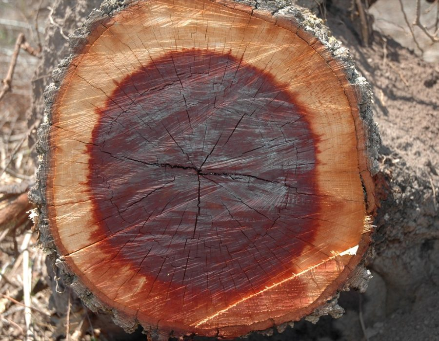
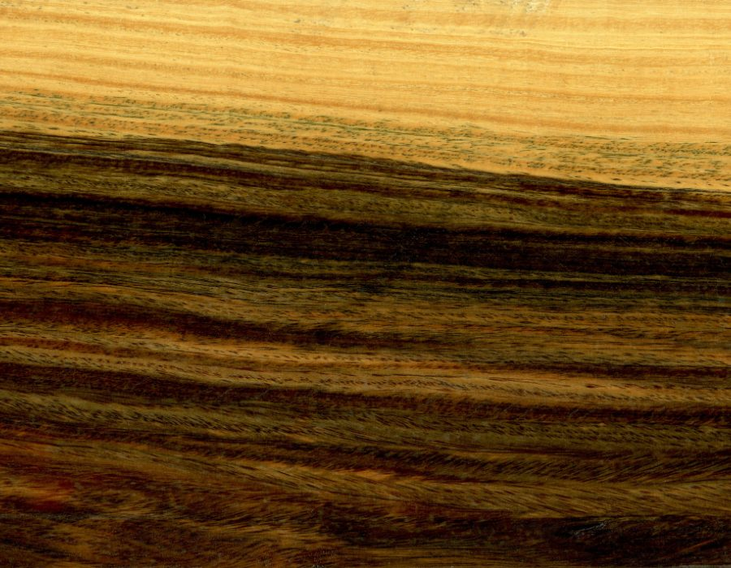
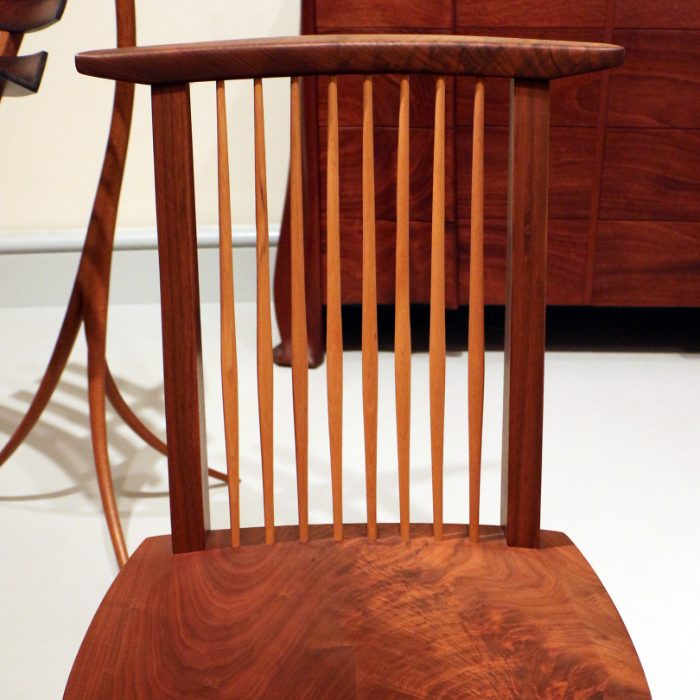
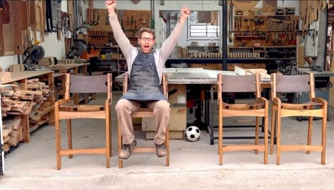
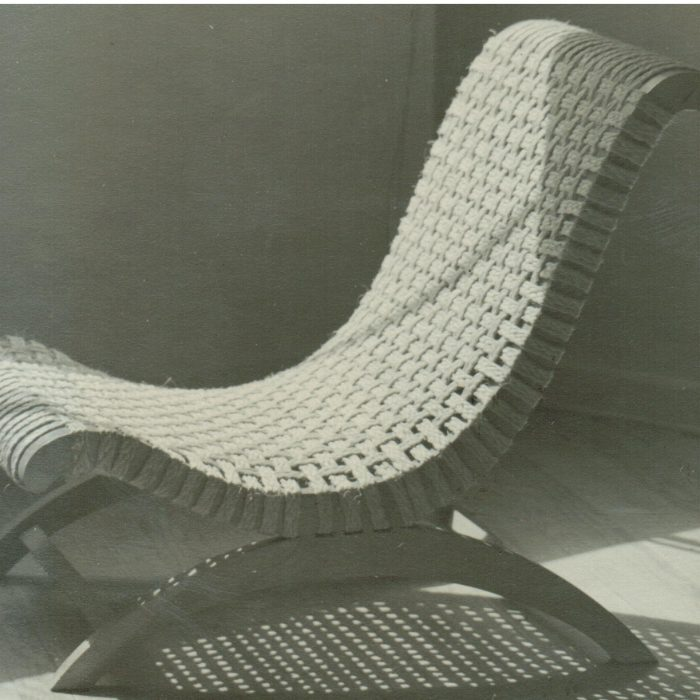

18–20Septiembre 2026
Tocar Madera 2026
Encuentro del oficio de la madera en Parque La Estación, Avellaneda. Nota sobre los expositores y patrocinadores que participaron.
Leer la notaCarpintería y ebanistería en castellano: un diccionario técnico inglés y español, calculadoras para el taller y una biblioteca de libros del oficio.
Máquina para aplanar una cara y escuadrar un canto. Es el primer paso, antes de llevar la tabla a espesor.


Dos pilares
Cada pieza del proyecto gira alrededor de estas dos dimensiones del trabajo con madera.
Calculadoras de corte, planificadores de tableros, recursos técnicos online. La tecnología al servicio del taller.
// software · apps · utilidades
221 términos técnicos en inglés y español, con pronunciación. Porque nombrar bien lo que hacés es la primera herramienta del oficio.
// diccionario · EN · ES
Herramientas digitales
Herramientas online para resolver cálculos del día a día en el taller. Sin instalación, desde el navegador.
Cálculo de volumen
Calculá pies de madera a partir de dimensiones en mm o cm. Incluye presets de tableros estándar del mercado argentino.
Conversión de medidas
Convertí pulgadas fraccionarias y pies/pulgadas a mm, cm y metros. Tabla de tamaños nominales vs reales de madera aserrada.
Referencia técnica
221 términos técnicos con pronunciación fonética y definición en contexto. Buscá en inglés o en español.
Planificación de piezas
Calculá cuánto se mueve una tabla con la humedad según la especie, repasá seis ensambles básicos y armá el despiece de un tablero con la pérdida del corte.
Recurso online
Sobre el proyecto
Soy de Madera nació de una incomodidad concreta: la mayoría del conocimiento técnico de calidad sobre carpintería y ebanistería existe en inglés. El español merece lo mismo.
El proyecto combina el aprendizaje del oficio en el taller con curiosidad por la tecnología y el lenguaje. No es un canal de bricolaje doméstico: es divulgación con rigor de taller.
Referentes del oficio
Entrevistas, textos y obras de carpinteros y ebanistas que vale la pena conocer. El oficio se aprende mirando a quienes lo dominan.
Ebanistería · New Hope, Pensilvania (EE.UU.)
Nació en 1905 en Spokane, hijo de inmigrantes japoneses. Formado en arquitectura en el MIT y en la École des Beaux-Arts de París, aprendió carpintería tradicional japonesa de Gentaro Hikogawa durante su internamiento en un campo de concentración en Idaho, en plena Segunda Guerra Mundial. Fundó su taller en New Hope, Pensilvania, donde desarrolló el borde libre y la unión de mariposa como forma de honrar — no ocultar — las grietas y la forma natural del tronco. Murió en 1990. No llegamos a entrevistarlo: este perfil sale de lo que él mismo escribió en El alma de un árbol (1981) y de lo que quedó documentado de su obra, no de una conversación que tuvimos.


Ebanistería · Sierras de Córdoba (Argentina)
Nació en Brooklyn, estudió y se doctoró en literatura hispánica y aprendió el oficio como aprendiz en City Joinery, un estudio de muebles de diseño en Dumbo. Hoy hace muebles a medida en su estudio de las sierras de Córdoba, con el método que llama bench made: un artesano, o un grupo chico, empieza y termina una sola pieza a la vez. Seca su propia madera al aire, de 9 a 12 meses por pulgada. Leer la entrevista.
Diseño de mobiliario · Ciudad de México (México)
Nació en Cuba en 1895 y estudió arquitectura en Europa, donde conoció a Walter Gropius y Hannes Meyer, de la Bauhaus. Se exilió en México y, casada con el muralista Xavier Guerrero, recorrió el país estudiando el mueble tradicional de distintas culturas originarias. De ese trabajo nació el butaque, su reinterpretación del asiento colonial mexicano — Luis Barragán lo adoptó en su propia casa y le encargó una versión a medida, el "Miguelito". Murió en 1981; la UNAM sostiene una beca con su nombre para diseñadoras industriales. No la entrevistamos: este perfil sale de lo que quedó documentado de su obra y su historia, no de una conversación que tuvimos.

Formación
Escuelas, talleres y recursos para aprender carpintería y ebanistería en español. Directorio en construcción permanente.
+ Sugerí una escuela
+ ¿Sos maestro? Escribinos
+ Sugerí un recurso
Recursos
Guías paso a paso, ensayos sobre el oficio y material de consulta: lo que vale la pena guardar.
Ensayos
Reseñas
Archivo · PDFs, videos y fotos
Encuentros
Seminarios, ferias y encuentros del oficio y de la madera en Argentina.
Ya pasaron
Encuentro del oficio de la madera en Parque La Estación, Avellaneda. Nota sobre los expositores y patrocinadores que participaron.
Leer la notaNovedades
Un mail cuando haya algo nuevo: entradas del Diario, términos del diccionario y la salida de los cuadernos. Sin publicidad.
Te llega un mail para confirmar. Podés darte de baja cuando quieras.